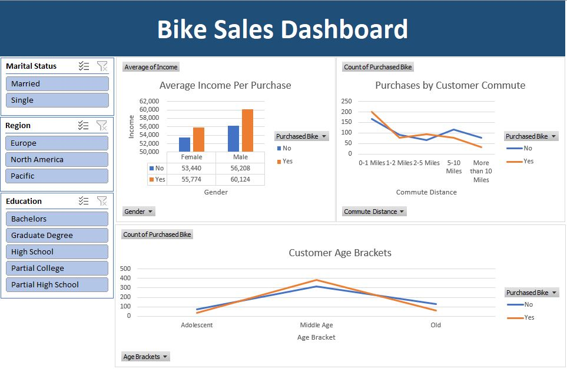
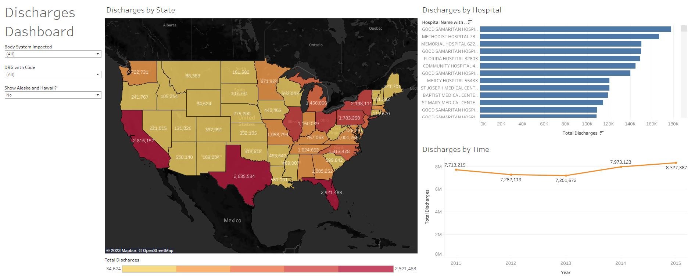
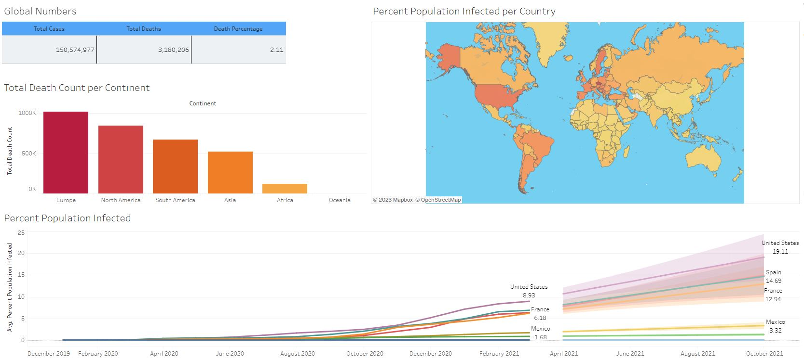
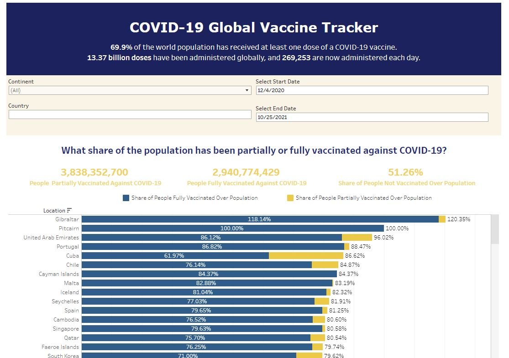

Excel Bike
Sales Dashboard
In this project, Excel was used to create an interactive dashboard that tracks bike sales and analyzes sale trends. Analytics visualized trends in purchases based on factors including average income, customer commute, and age. Specialty filters can be applied to the dashboard based on customer attributes such as region, marital status, and education status.


In this project, Nashville housing data was cleaned from its raw format and reformatted in SQL Server with the intent to improve the data quality and to make it more useful and consumable for later analytics.
COVID-19 Data Analysis in SQL
In this project, COVID data was analyzed using SQL. Topics of interest were analyzed, including global and regional mortality rates, infection rates, and vaccination rates.

In this project, Python was utilized to analyze movie data. Data was first cleaned and reformatted, then analyzed to discover trends in the highest grossing films. Data was then visualized to analyze correlations between gross earnings and factors such as budget, rating scores, runtime, and production company.

In this project, U.S. DRG Analysis contains the collected data on inpatient discharges for Original Medicare Part A beneficiaries for each Diagnostic Related Group (DRG) from 2011 to 2015. Visualizations display information on discharges by DRG and by body systems. The hospital finder dashboard breaks down information on average charges by DRG and discharges per hospital. The discharges dashboard analyzes total discharges by states, hospital, and time.

In this project, COVID-19 data on mortality rates and infection rates were visualized by analyzing total death count, infection rates per country, and average infection rates of the top infected countries.

In this project, an interactive dashboard was created to analyze trends in both partially and fully vaccinated individuals by country. GDP per capita was also analyzed to discover the trend in a country’s GDP and its effect on vaccination rates. Specialized filters allow users to narrow each visualization by attributes including continent, country, and time range.